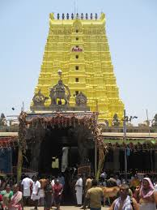
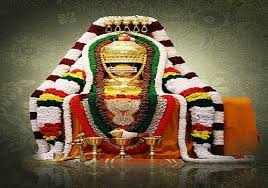
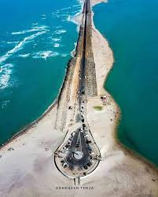
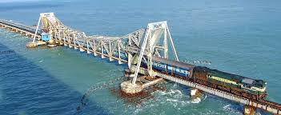

Rameswaram
- This is also one of the twon in Tamilnadu
- It is island One of the lord shiva temple
- This sea is a not avalible of waves
- The lord ram is to going on lanka is starting point on Rameswaram
- The avalible of ramasetu is still to see the ramasetu
- That place is called on danushkoti
- The rameswaram special is to lord of ram to prathishtinchina siva lingam
- Is most popular south india most powerful temple
This is also one of the twon in Tamilnadu
It is island One of the lord shiva temple
This sea is a not avalible of waves
The lord ram is to going on lanka is starting point on Rameswaram
The avalible of ramasetu is still to see the ramasetu
That place is called on danushkoti


The rameswaram special is to lord of ram to prathishtinchina siva lingam
Is most popular south india most powerful temple
To went to the darshan is early morning 4am is spatika linga darshan upto 5am
The early morning 6am to start the free darshan and special darshan
And the temple very historcal temple old temple but very bug temple
The rameswaram temple is an 22 bavis snanam is very useful
To the brokar is to adopt in the temple to spend the money all the bavis snanam is avalible
To after darshan is more visable places in rameswaram
To see the Dr.A.P.J.Abdul kalam house and memorial place
After to visit the pambam=n bridge
After to visit the villoondi theerthem in rameswaram
and one more place is agni theerdam beach is near temple
And to visiting places is danushkoti and ram sethu beach


The rameswaram shopping is very less costs
To purchese the swetters and blankets very less cost
Any item to purchese very less cost of the shoppings because all are imports
The rocks are the rameswaram don't drowning all rocks are to float
The power of ram sethu